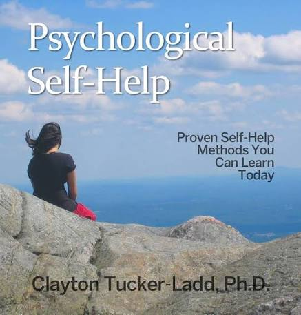
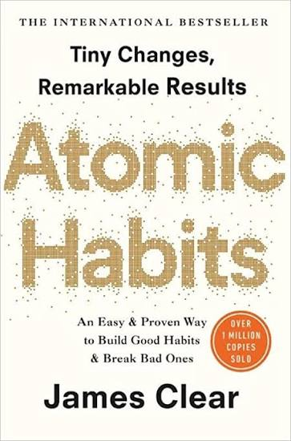

Video
Managing Stress
Learn practical ways to understand and manage everyday stress.
Explore carefully selected resources for stress, anxiety, mindfulness, personal growth, and wellbeing.
Learn practical ways to understand and manage everyday stress.

Quick and practical tips to help you manage stress in just a few minutes.

Explore helpful approaches to managing stress and anxiety in everyday life.

Explore what therapy is and how professional support can help.

Explore supportive ideas for someone experiencing depression.

Explore depression and develop a better understanding of the experience.

Explore loneliness and ways of understanding and navigating the experience.
Viktor Frankl's reflection on meaning, resilience, and purpose in life.
Explore BookA classic work exploring foundational ideas in psychology and human thought.
Explore BookReflections on self-discipline, resilience, perspective, and living well.
Explore BookReflections on thoughts, character, habits, and personal growth.
Explore Book
A resource covering psychological concepts and approaches to personal wellbeing.
Explore Book
A guide to building better habits through small and consistent changes.
Explore Book
A reflective listen about releasing emotional burdens and moving forward with greater peace.

A calming resource focused on anxious thoughts and finding greater mental calm.

Explore ideas around trauma, emotional recovery, and the process of healing.

A gentle resource for cultivating a calmer mindset and positive perspective.

A motivational listen focused on confidence, mindset, self-belief, and personal growth.

A simple guided meditation to slow down, relax, and reconnect with the present moment.

Helpful tips for building a simple and comfortable meditation practice.

A beginner-friendly guide to understanding and practicing meditation.

A gentle reflective practice for creating a sense of calm, acceptance, and inner peace.
Try another search or choose a different category.
When you need more than self-help, professional support is available. Explore trusted organizations that can help you find the right care.
Find psychologists and counselors and explore available mental-health support.
Find a Psychologist →Explore professional psychiatric services and mental-health information in Nepal.
Find a Psychiatrist →
Explore psychosocial support, counseling, programs, and mental-health resources.
Explore TPO Nepal →Discover community-based mental-health support, peer support, and advocacy.
Explore KOSHISH →Explore counseling, psychotherapy, and psychological support services.
Explore Services →MindSpeak does not provide diagnosis or treatment. These organizations are listed as external resources to help you explore professional support.
If you need immediate support, these services can help you connect with the right assistance.
If you or someone around you is in immediate danger, contact emergency services or go to the nearest emergency department.
Support for people experiencing suicidal thoughts, emotional distress, or needing immediate mental-health assistance.
Psychosocial support and mental-health assistance through a dedicated helpline.
Contact the police when there is immediate danger, violence, or a serious safety emergency.
MindSpeak is not an emergency service and does not provide diagnosis, treatment, or crisis intervention. Please contact the appropriate service directly for professional or emergency assistance.